As popular as pie charts may be in many different settings, they sure seem to have a bad reputation in the data visualization world.
Why is that?
Consider this for a moment. A pie chart with many different pieces (and colors) that may or may not be labeled. The viewer then has to study the proportions in relation to the others to understand it. The reality is that we aren’t that great about reading and comparing angles to each other, and the more proportions there are to look at, the worse it gets. A 3D pie chart can make the problem even worse because the “perspective” view can deceive the reader into thinking a proportion is larger than it is.
For example, the red piece in the pie chart below seems to be bigger, but the blue piece sure seems to look pretty close in size as well. Additionally, is the blue piece larger than pink and green combined?
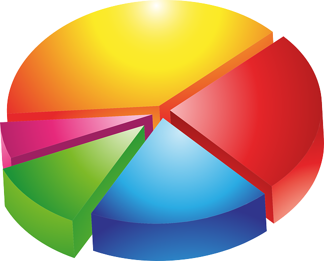
See what happened there? You’re thinking about it too much instead of gathering the clear actionable insight.
While there might be some instances where pie charts might be useful, I’m here today to show you a (fun) and easy to read alternative.
Introducing the Waffle Chart
Waffle charts are pretty much exactly what they sound like. They look a lot like waffles. These waffle charts, however, feature a neat way to show proportions of data. Let me show you how.
Context Behind the Data Set
The data set for #MakeoverMonday Week 6 looked at the percentage of someone’s life that involved the U.S. being at war. This percentage varied per birth year because of different conflicts over time. The point was that nearly a quarter of Americans have never experienced the U.S. in a time of peace. Here is the original data visualization that was provided with the data set.
As you can see, that is a ton of pie charts! Many of them look very similar at first glance, but they actually represent different percentages over time. The angles aren’t very distinctly different. For this reason, I wanted to explore a different way to show proportion over time. This is where the waffle chart comes into play.
Waffle Chart Template
For waffle charts to work, there is some Tableau magic that needs to take place. I’ve seen a [few different ways](
Waffle Chart In Tableau
) to accomplish what I ultimately wanted to do, and what I will show here seemed to be the easiest route for me.
The first step is to actually create a “template” to use with your other data source(s). The waffle creates the framework and the data will show through it in the form of colored boxes (at least in this case).
In a spreadsheet, I laid out a template with a Row, Column, and Percentage columns. I only show part of it here in the screenshot because the information repeats itself.
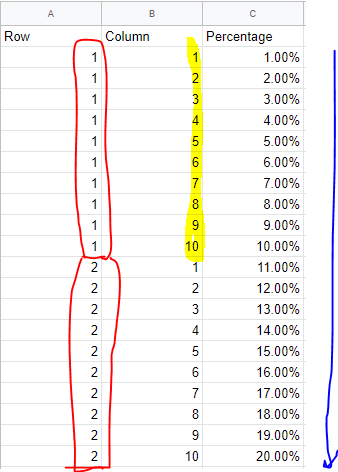
In the Row column, you’ll want to count up to 10 and have ten repeated instances of each number.
In the Column column, you’ll want to count up to 10 and repeat every ten lines.
In the Percentage column, you’ll want to simply ascend in percentages from 1 to 100%
I saved this spreadsheet as the Waffle Chart Template and then opened up Tableau Public.
Here is what the waffle chart setup looks like initially
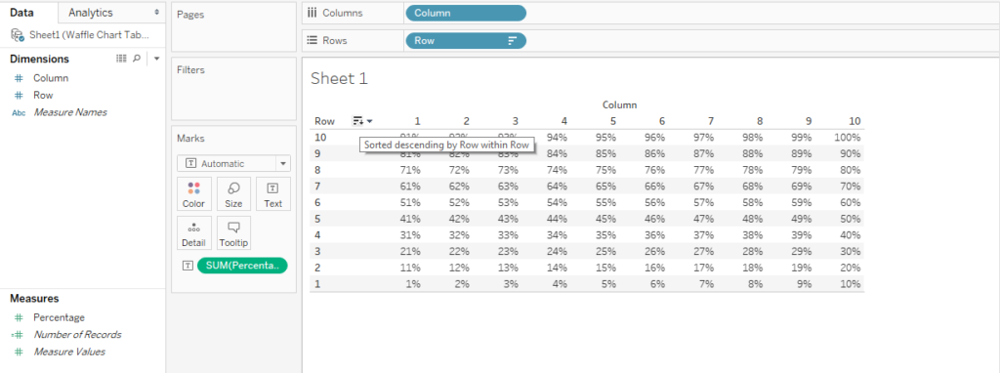
You can flip the 1% through the 100% around in different ways. Color will later replace the numbers. So in this example, 18% will fill up most of the bottom two rows in color.
Coloring the Boxes
The next step is to create a couple calculated fields.
The first one will involve our war source data itself. As you can see in the screenshot in the top left, the data sources you click on will show the available pills, so we need to be mindful of that when we make calculated fields that go with specific data.
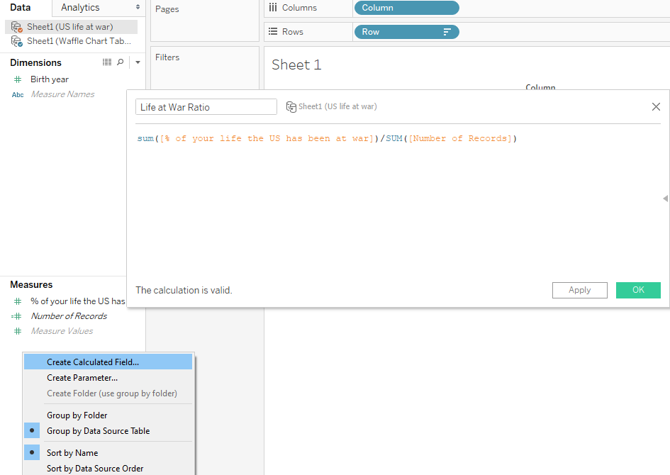
What this calculated field will do is create a ratio of the amount of time at war for any given birth year. It seems that the data source formatting can make the difference of what exactly gets placed in the calculated field, but this is what I was able to make work in this particular case.
With Waffle Chart Template selected in the top left, I created this calculated field. As you can see, the fields in the calculated field (in orange) look a lot like a typical Excel spreadsheet where you are referencing items from different worksheets in a workbook. It will show <Source.Field> in terms of formatting.
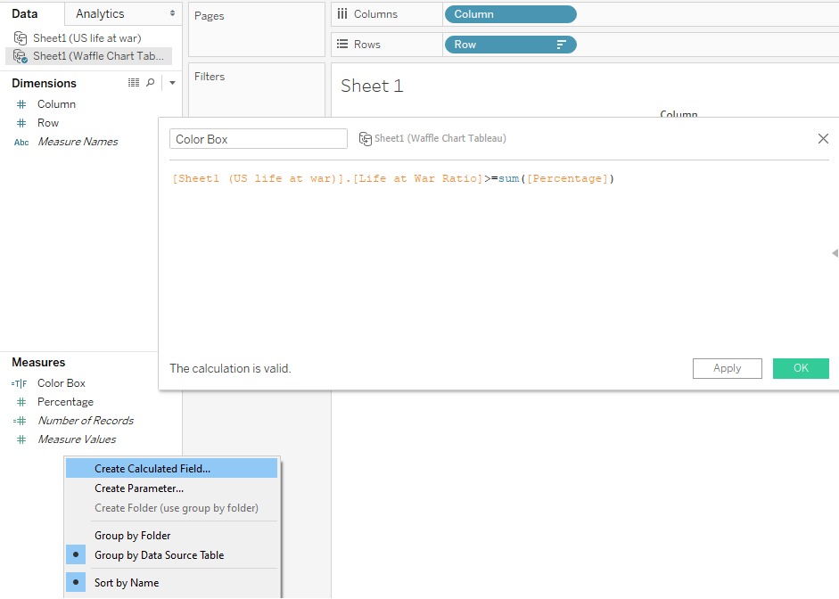
What this second calculated field will do is color in the waffle chart boxes based on the condition that the life at war scenario is greater than or equal to percentage numbers we came up with in the waffle chart template.
If that condition is “true,” then the boxes will be colored one color. If it’s “false,” then the rest of the boxes will be colored a different color.
Here’s how that plays out.
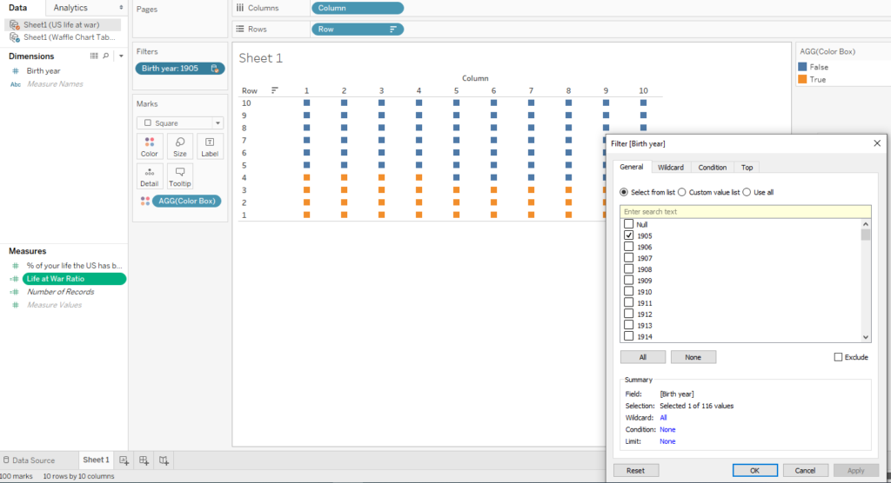
We will need to filter by a single year on whatever chart we show. Otherwise, the colored boxes won’t know what to do with multiple different ones selected.
Formatting the Waffle Chart
In this next step, I typed in a new field in the column shelf called AVG(1). What this will do is help us make all the boxes become more uniformly distributed and lined up.
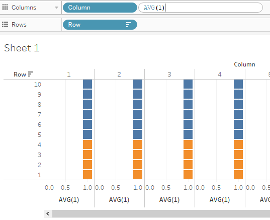
I then right clicked on the axis below to edit it and make it fixed. What that does is remove the 0.0 to 1.0 points and scoot all the boxes together.
.png)
From here, I am able to move all the boxes together uniformly.
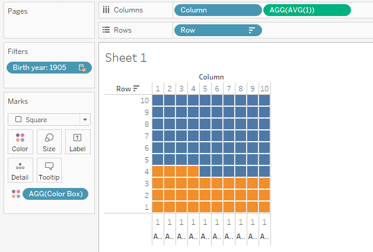
Annotations
I then added a mark label here to show the percentage filled for this particular waffle chart.
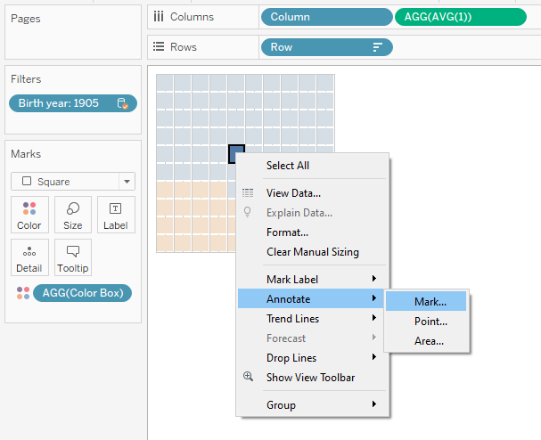
As you may recall from my previous posts, the default annotations and tool tips tend to show all the fields and I like to reformat them to read differently. In this case I just cut it down to just the percentage itself.
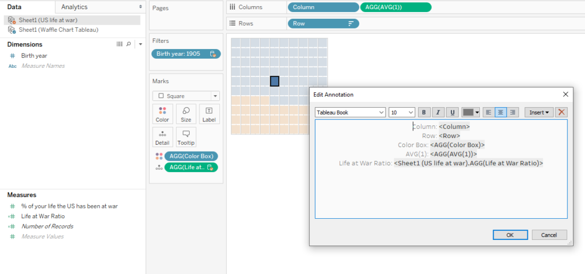
The original data source didn’t display the percentage with a percentage sign, so I fixed that with the number format options.
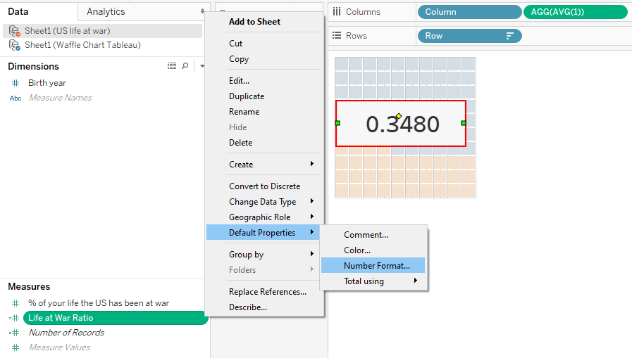
Color Choices
I also looked at coloring this waffle chart carefully. Gray would fade away while the red would highlight the percentage filled in the waffle chart.
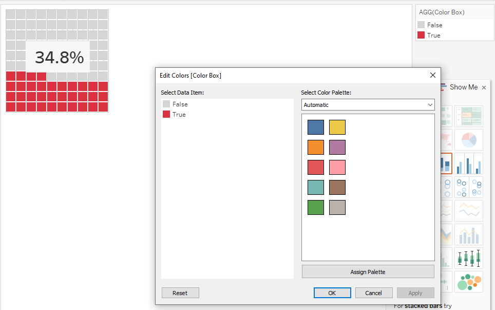
I initially went with red for an emotional impact regarding war. Later, I muted it a bit to be a dark pink instead. Too much red can be a strain on the eyes. My goal was to put a bunch of these charts side by side on the dashboard, so that helped influence my decision.
Now that the waffle chart looks like what I intended, what I did next was copy and paste the worksheets. I then filtered for different birth years. For my purposes, I only did this for the years 1905, 1915, 1925, 1935, 1945, 1955, 1965, 1975, 1985, 1995, 2005, and 2015. It was a personal decision to try to show the same kind of idea but in a much more condensed way.
Bonus Data Viz: Timeline
After I completed all my waffle charts, I wanted to show a little more context on the kind of wars and conflicts that were going on throughout time. I created a little timeline to place on my dashboard.
To make this, I quickly put together a new data source from scratch to connect to Tableau Public. This new data source simply listed the name of the war/conflict and the time in years.
Then, I created a calculated field and typed this in. It will later help create 0 lines for a timeline.
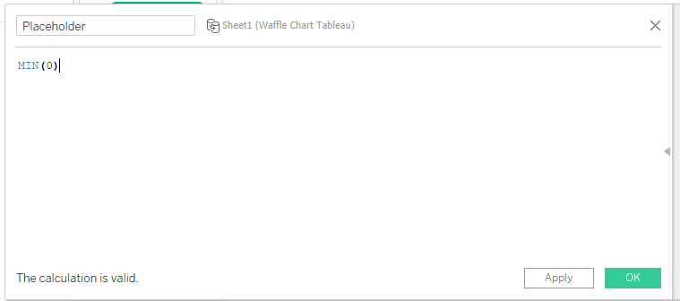
I placed the War pill and the Placeholder calculated field on the rows shelf. I also placed the Year Began and the Year Ended pills on the columns shelf.
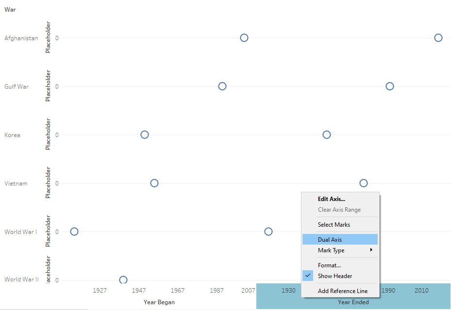
From here, I made the chart show dual axis and synchronized the two together.
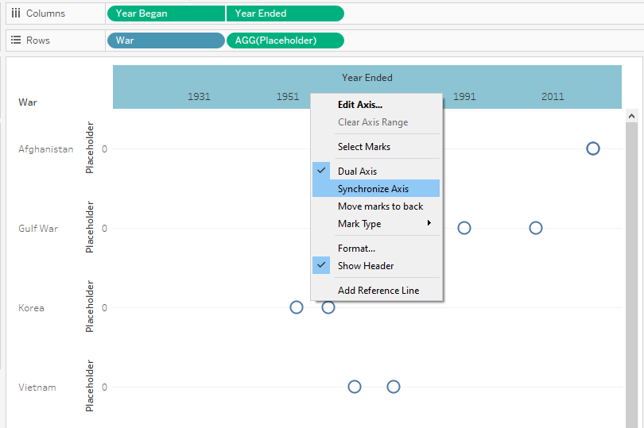
I then edited the axis to evenly space the years across the bottom.
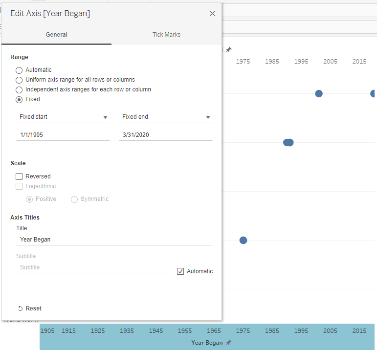
Here’s how that turned out after some additional formatting with the colors and lines.
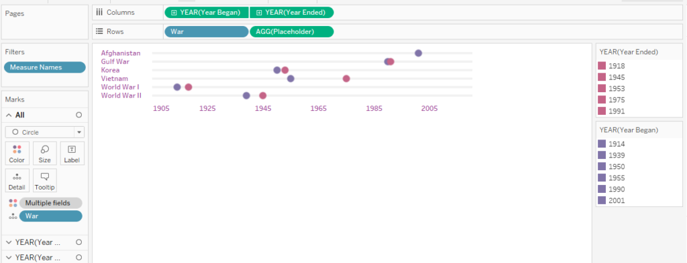
Final Data Visualization
Here is how the final data visualization with all the waffle charts and timeline combined turned out! Here is the link to the interactive viz. It looks best on desktop or tablet.
As with any of these data visualizations I show here, I make it a point to learn a lot along the way, so I can share what I have learned. This one took quite a bit of time to troubleshoot, but I think it paid off. What do you think?
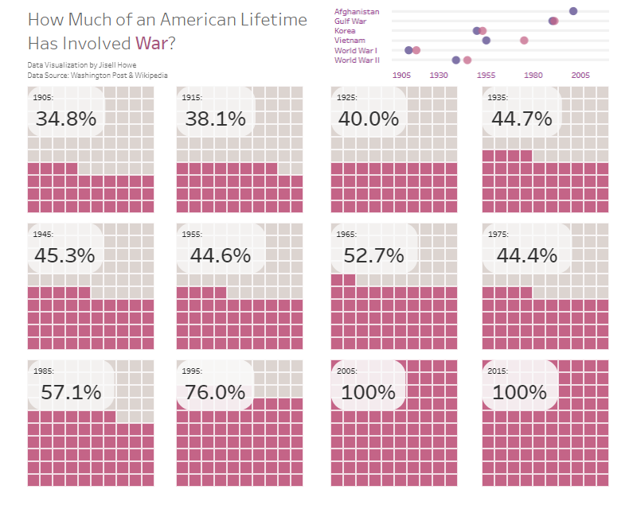